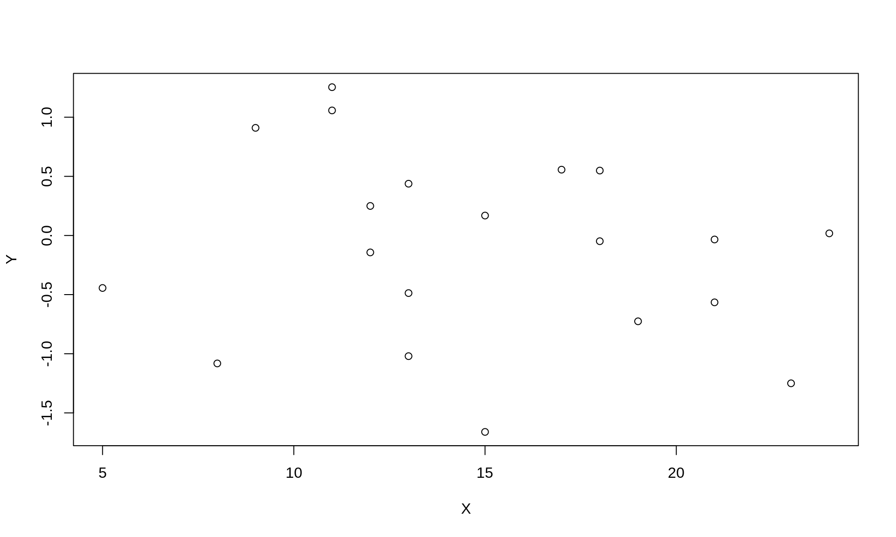
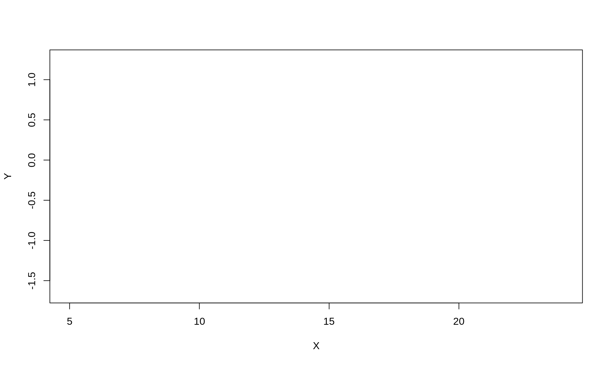
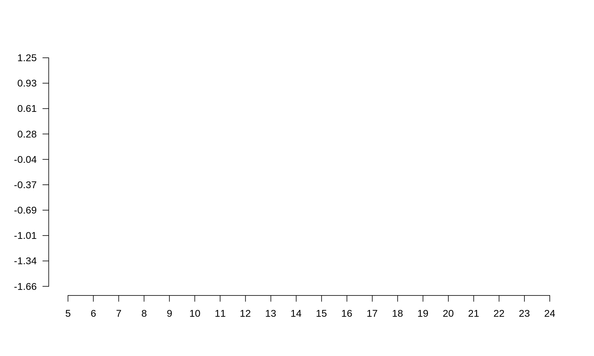
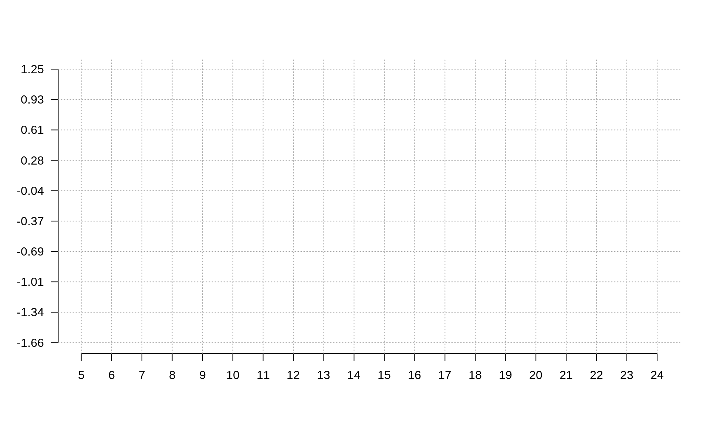
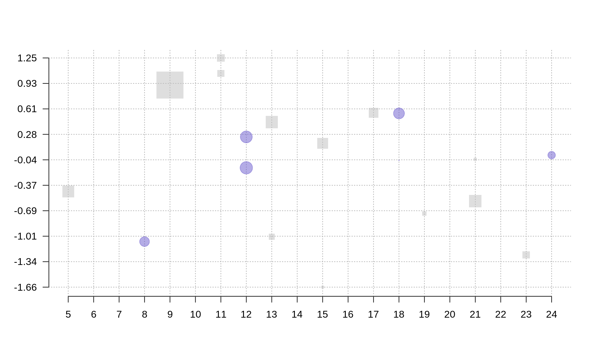
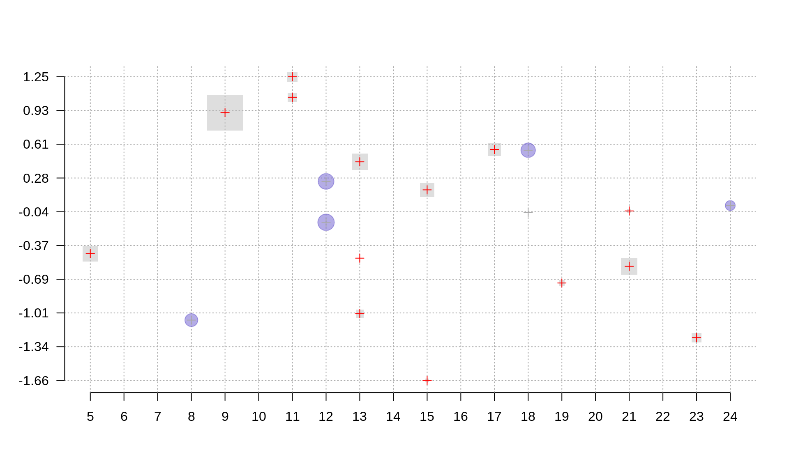
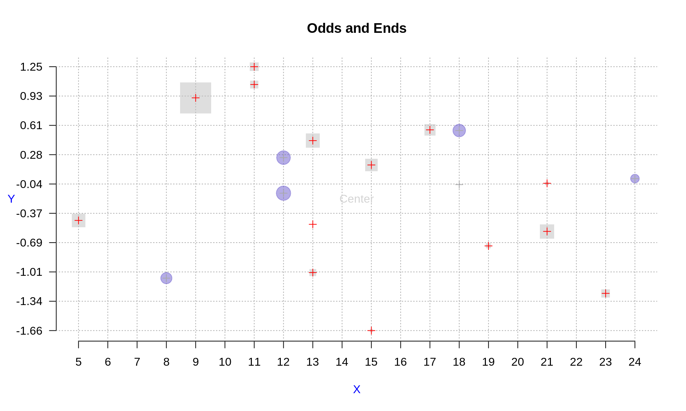
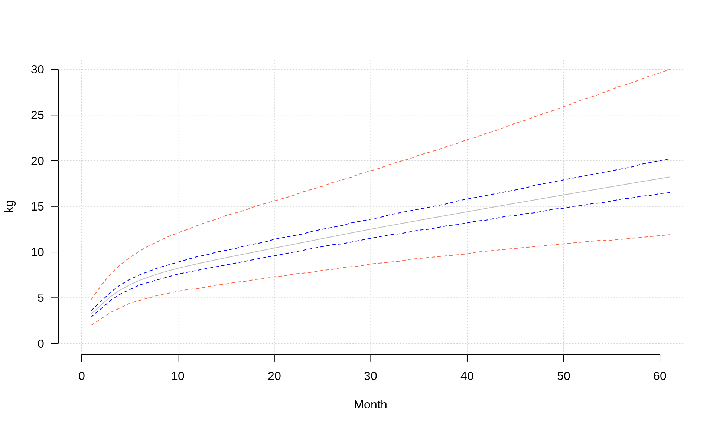
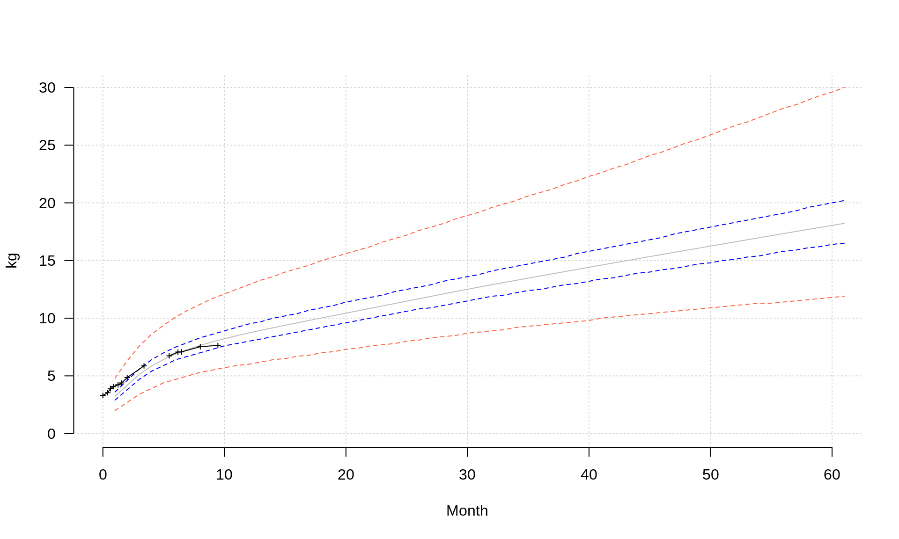
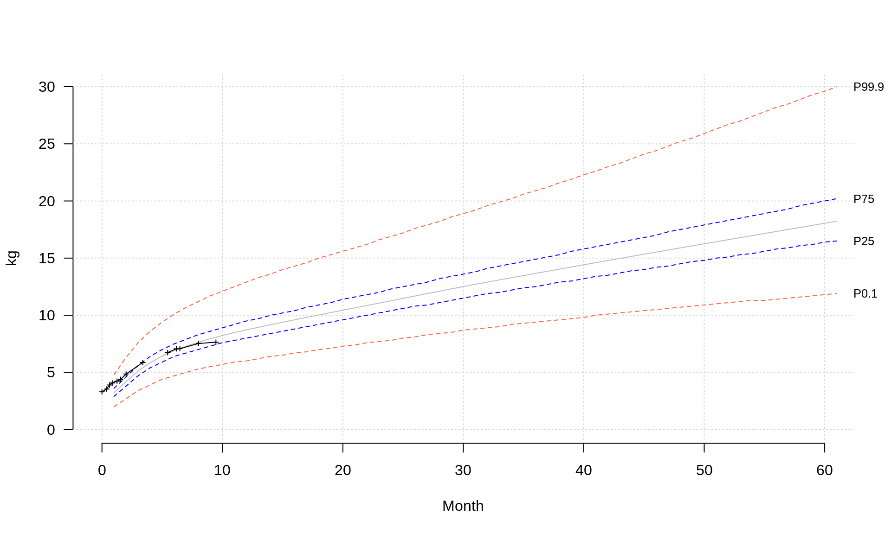

1 Introduction
In this lab, we will go step-by-step through manually building a scientific plot using base graphics in R.
2 Generating data
First, we will produce some random data that we will later plot. Make a data frame with
- 20 random coordinates (x,y) and
- radius \(r\) for each data point.
- The x coord takes random values from 1 to 25 and
- both the y and the radius r coord are samples from \(N(0,1)\).
- Each point (row of the data frame) has a name ind1 … ind25.
First, look at the defaults:
- plot the data in the simplest possible way.
#20 random datapoints
x <- sample(c(1:25), size=20, replace=T)
y <- rnorm(n=20, mean=0, sd=1) # sample from normal
r <- rnorm(n=20, mean=0, sd=1) # radius from normal
names <- paste("ind", 1:20, sep="") # assign some names
data <- data.frame(cbind(X=x,Y=y, R=r), row.names=names)
plot(data[,1:2])
3 Building a plot
As you see, the points are displayed in a simple way, axes are set automatically, the radius is not reflected on the plot in any way (3rd dimension).
3.1 Hide markers
Build the plot from scratch, begin by displaying no points.
plot(data[,1:2], type='n')
3.2 Hide border/axes
Remove the default box around the plot and axes.
plot(data[,1:2], type='n',xaxt='n', yaxt='n',xlab="", ylab="", frame.plot=F)3.3 Axes labels
Create X and Y axis so that they cover the whole range of x and y. For the Y axis, set 10 equidistant tickmarks and set labels to their values rounded to two decimals. Turn the labels, so that they are parallel to the OX axis.

#Create X axis
coords.x <- seq(min(data$X),max(data$X), by=1)
axis(side=1, # 1-left, 2-top, 3-right, 4-bottom
at=coords.x # coordinates for tickmarks
)
#Create Y axis
#we want 10 tickmarks along the data range
coords.y <- seq(min(data$Y), max(data$Y), length.out=10)
#and our labels will be the rounded values of y
labels.y <- round(coords.y, digits=2)
axis(side=2,
at=coords.y,
labels=labels.y, # we want specific labels
las=2 # turn the text so it is parallel to OX
)3.4 Grid lines
Plot gridlines so that it is easier to read the plot. There should be a grey dashed line from each tickmark on both axes.

abline(v=coords.x, col="darkgrey", lty=3)
abline(h=coords.y, col="darkgrey", lty=3)
#you could also use grid()3.5 Add markers
Define a new mycol function that takes a color name and a transparency value as two arguments and returns the corresponding rgb color value. OPTIONAL – if it seems to difficult, look up the answer.
#Function for adding transparency to a given color.
mycol <- function(colname="olivedrab", transparency=.5) {
#convert color name to its RGB value and add the desired
#transparency
color <- c(as.vector(col2rgb(colname))/255, transparency)
# and make a new color from the above
color <- rgb(color[1], color[2], color[3], color[4])
return(color)
}Plot datapoints so that their size is proportional to \(e^r\) where \(r\) is the radius, points at even X should be round and blue and points at odd X square and grey.

#Plot radii
points(data[data$X%%2 == 0,], pch=19, cex=exp(r), col=mycol("slateblue", .5))
points(data[data$X%%2 != 0,], pch=15, cex=exp(r), col=mycol("grey", .5))Plot centers of the points as a cross: grey for blue/even points and red for grey/odd points.

points(data[data$X%%2 == 0,], pch=3, cex=1, col="darkgrey")
points(data[data$X%%2 != 0,], pch=3, cex=1, col="red")3.6 Annotation
Add grey text ‘Center’ at the center of the plot.
center.x <- mean(range(data[,1]))
center.y <- mean(range(data[,2]))
text(x=center.x, y=center.y, "Center", col="lightgrey")3.7 Titles
Add title ‘Odds and Ends’ and text ‘X’ and ‘Y’ on the margins of the appropriate axes.

title("Odds and Ends")
mtext("Y", side=2, line=3, cex.lab=1,las=2, col="blue")
mtext("X", side=1, line=3, cex.lab=1,las=1, col="blue")3.8 Legend
Add a legend for ‘odd’ and ‘even’ points. Place it in the top-right corner.

legend('topright',
legend=c("odd", "even"),
col=c(mycol("slateblue", .5), mycol("grey", .5)),
pch=c(19,15),
cex=1,
pt.cex=1.2,
title="Legend",
bty='n'
)4 Visualizing growth data
A female child was measured at the following dates:
‘30-09-2015’, ‘12-10-2015’, ‘19-10-2015’, ‘26-10-2015’, ‘07-11-2015’, ‘16-11-2015’, ‘30-11-2015’, ‘11-01-2016’, ‘08-02-2016’, ‘14-03-2016’, ‘05-04-2016’, ‘14-04-2016’, ‘31-05-2016’, ‘14-07-2016’,
the measured weights in grams were: 3300, 3540, 3895, 4070, 4230, 4385, 4855, 5865, not taken, 6736, 7065, 7080, 7530, 7640 and
the measured lengths: 43, no measurement taken, 53, 54, 55, 56, 58, 62.5, 65, 67, 67.5, 67.5, 70.5, 71.5.
The headcircumference for the same datapoints was (in cm): 34, 35.5, 36.1, 36.8, 36.8, 37.3, 38, 40.2, 41.4, 42.1, not taken, 43, 44, 45.
Your task is to plot these data on the WHO centile grids. Choose weight/length/circumference depending on the month you was born:
- weight: Jan, Apr, Jul, Oct
- length: Feb, May, Aug, Nov
- circumference: Mar, Jun, Sep, Dec
4.1 Prepare input data
Use function dmy() from the lubridate package to create a vector of timepoints.
library(lubridate)
timepoints <- dmy(c('30-09-2015', '12-10-2015','19-10-2015', '26-10-2015', '07-11-2015', '16-11-2015','30-11-2015', '11-01-2016', '08-02-2016', '14-03-2016', '05-04-2016', '14-04-2016', '31-05-2016', '14-07-2016'))Enter the measurement of choice as a vector
weight <- c(3300, 3540, 3895, 4070, 4230, 4385, 4855, 5865, NA, 6736, 7065, 7080, 7530, 7640)
length <- c(43,NA,53,54,55,56,58,62.5,65,67,67.5,67.5,70.5,71.5)
head <- c(34,35.5,36.1,36.8,36.8,37.3,38,40.2,41.4,42.1,NA,43,44,45)WHO months are 30.4375 days long. Transform timepoints into OX coordinates so that the distance between them corresponds to the days between the two measurements. HINT: check as.duration() and ddays() functions.
who.month <- 30.4375 #days
xpoints <- as.duration(timepoints[1] %--% timepoints) / ddays(1) / who.month4.2 Prepare reference data
Go to WHO website (http://www.who.int/childgrowth/standards/en/) and find out the link to the dataset of your concern, e.g. Weight for age, percentiles for girls have the following address: http://www.who.int/entity/childgrowth/standards/tab_wfa_girls_p_0_5.txt
Load the data using URL from the previous point and the read.table() function.
uri <- "http://www.who.int/entity/childgrowth/standards/tab_wfa_girls_p_0_5.txt"
#uri <- "http://www.who.int/entity/childgrowth/standards/second_set/tab_hcfa_girls_p_0_5.txt"
#uri <- "http://www.who.int/entity/childgrowth/standards/tab_lhfa_girls_p_0_2.txt"
myData <-read.table(uri, header=T, sep='\t')4.3 Built empty plot
Create an empty plot to show your and WHO data,
plot(1, xlim=c(0, max(myData$Month)), type='n', bty='n', ylim=c(0, max(myData[,c(5:19)])), las=1, xlab='Month', ylab='kg')
grid()4.4 Plot reference data
Plot WHO mean and percentiles: P25, P75, P0.1 and P99.9, use different colors and line types to make the plot pretty.

lines(myData$M, col='grey', lty=1)
lines(myData$P25, col='blue', lty=2)
lines(myData$P75, col='blue', lty=2)
lines(myData$P01, col='tomato', lty=2)
lines(myData$P999, col='tomato', lty=2)4.5 Plot input data
Plot your data on top of the percentiles, mind the units so that they match with the WHO ones

points(xpoints, weight/1000, pch=3, type='l', cex=.5)
points(xpoints, weight/1000, pch=3, type='p', cex=.5)4.6 Add annotation
Add descriptions of the confidence lines in the margins

mtext(text = c('P0.1','P25','P75','P99.9'), side = 4, at=myData[dim(myData)[1], c('P01','P25','P75','P999')], las=1, cex=.8)5 Visualizing Gapminder data
You task here is to use the already acquired R knowledge to plot an interesting relationship between two freely selected variables available at Hans Rosling’s Gapminder Foundation page.
- Go to http://www.gapminder.org/data/
- Select a dataset of interest,
- Load data to R, take care of missing values etc.,
- Find a nice way of visualizing the relationship between some selected variables,
- Think of scales (linear, logarythmic), axes labels etc.,
- Be creative,
- Visualize a selected variables using boxplot and histogram on one plot (HINT: parameter mfrow),
- Discuss the result with your colleagues and TAs.